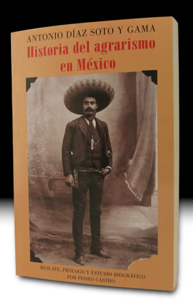

- Inicio
- Publicaciones
- Álvaro Obregón fuego y cenizas de la Revolución Mexicana
- Adolfo de la Huerta El desconocido de Roberto Guzmán Esparza
- A la Sombra de un Caudillovida y muerte del general Francisco R. Serrano
- Soto y Gamagenio y figura
- Adolfo de la Huerta Serie Grandes Protagonistas de la Historia Mexicana
- Historia del Agrarismo en México
- Ciudad Cuauhtémoc, Chihuahuacrónica de su fundación
- Adolfo de la Huerta: la integridad como arma de la revolución
- Adolfo de la Huerta y la Revolución Mexicana
- Fronteras Abiertasgeopolítica y expansionismo en Brasil contemporáneo
- Currículum

ISBN: 968-411-543-1
Editorial: Fondo Nacional para la Cultura y las Artes FONCA-Universidad Autónoma Metropolitana Iztapalapa. 2002, 688 pp., fotos, ilustraciones
Historia del Agrarismo en México
(Antonio Díaz Soto y Gama)
Prólogo, semblanza, rescate y edición de Pedro Castro
Soto y Gama inicia a la edad de veinte años su destacada trayectoria política cuando fundó el Partido Liberal con Camilo Arriaga y los hermanos Flores Magón en 1901. Este partido fue la primera organización civil dedicada a combatir a la dictadura de Porfirio Díaz. Una vez triunfante la Revolución de 1910, Soto y Gama participa en la creación de la Casa del Obrero Mundial, y luego se integra al Zapatismo, donde desempeña un destacado papel junto al Caudillo del Sur. A principios de los veintes, ya como líder del Partido Nacional Agrarista y brillante parlamentario, colabora estrechamente con el Presidente Álvaro Obregón en la puesta en marcha de un ambicioso proyecto de reparto agrario. A su muerte Soto y Gama se separa del círculo revolucionario y participa activamente a favor de los candidatos presidenciales opositiores Villarreal, Almazán y Padilla. Ya en su madurez, y esgrimiendo una ideología anticomunista y católica, es un crítico implacable del sistema priísta y de sus políticas en materia agraria. Falleció en la ciudad de México en 1967.
Historia del Agrarismo en México de Soto y Gama recoge su visión acerca de los orígenes y evolución de los problemas agrarios del país, así como las posturas de pensadores, activistas y gobernantes al respecto. Obra inédita, escrita a principios de los cuarentas por encargo del secretario de Educación Octavio Véjar Vázquez, inexplicablemente desapareció después de entregarse a su destinatario. Pedro Castro descubre los manuscritos originales en el archivo de la familia, y a partir de aquí realiza una labor consistente en ordenarlos y transcribirlos. En ellos Soto y Gama revela una inigualable cultura histórica y legal, y su experiencia personal como promotor del agrarismo. Soto y Gama sin duda imaginó ganar para su causa a los lectores de este trabajo con su llameante retórica, como la que escuchó la Convención de Aguascalientes, cuando él calificó a la bandera nacional como “ese estandarte que al final de cuentas no es más que el triunfo de la reacción clerical encabezada por Iturbide.” Este memorable episodio fue narrado magistralmente por Martín Luis Guzmán en El Águila y la Serpiente y en el que, por cierto, Soto y Gama estuvo a punto de perder la vida.
Réplicas y consultas con el autor: pedrocastro3131@gmail.com
Índice
Prefacio
- Semblanza de Antonio Díaz Soto y Gama, por Pedro Castro
- Antonio Díaz Soto y Gama, Agrarista, por Pedro Castro
- Prefacio de la obra
Tomo I
- Cortés y las encomiendas
- Los primeros colonos
- Los misioneros
- Fray Bartolomé de las Casas
- Encomiendas y repartimientos
- Primera distribución de la propiedad territorial
- Las tierras de los pueblos
- Supervivencia del calpulli
- Despojo de tierras: se inicia la usurpación tierras comunales
- El régimen interior del latifundio. Amos y peones
- Los Mayorazgos
- Plutocracia parasitaria
- Rebeliones y motines bajo el Virreinato
- Desarrollo incesante del latifundismo. Las funestas “composiciones” sobre tierras
- Haciendas contra pueblos: admirable resistencia los últimos
Tomo II
- La Guerra de Independencia y sus causas
- El levantamiento campesino y la obra social de Hidalgo
- La concepción agraria de Morelos
- El movimiento reaccionario de Iturbide
- El liberalismo individualista
- Dos precursores: Francisco Severo Maldonado y García Salinas
- La Revolución de la Sierra Gorda y algunas sus repercusiones
- La guerra social o de castas en Yucatán. Contratos de sangre
- Incidentes y conflictos agrarios en los años 1849 al 1854
- La cuestión agraria en la época la Reforma. La ofensiva contra los bienes comunales
- El otro aspecto de la reforma. Ofensiva contra bienes del clero
- La cuestión agraria en el Congreso Constituyente
- La cuestión agraria bajo el Imperio
- Confusión y caos bajo Juárez y Lerdo
- Incomprensión y desastre
Tomo III
- Porfirio Díaz ofrece en 1876 restituir tierras usurpadas
- Los pueblos, cansados de esperar, inician sublevaciones
- Vacilaciones y contradicciones. Dos tendencias luchan dentro del porfirismo
- Vigorización creciente de la plutocracia, Actuación y filosofía del grupo “científico”
- Los terrenos baldíos y las compañías deslindadoras. Magnitud de los despojos
- Despojos de las propiedades de los pueblos
- Los latifundios
- El porfirismo provoca la revolución. Su causa
- El surgimiento de Zapata
- El distanciamiento entre Madero y Zapata
- ¿Quién fue el responsable de la ruptura? ¿Madero o Zapata?
- El Plan de Ayala
- La reforma agraria sostenida por una minoría de intelectuales
- Los errores de Madero y el cuartelazo de 1913. Actitud de Zapata
Epílogo
- Entrevistas y otros escritos sobre agrarismo de Antonio Díaz
- Soto y Gama. Samblanza de Antonio Díaz Soto y Gama por Salvador Azuela
Reseñas y Comentarios
"Rescatan libro de Soto y Gama sobre el agrarismo mexicano", Culturas del periódico Crónica, p. 16, 31 de diciembre del 2002
Resenas
ClosePlease wait...
El Financiero
Cultural, Lunes 6 de enero del 2003, p. 56, David Cano, José. El capítulo agrario en México, aún sin resolverse: Pedro Castro. Publica un libro inédito de Díaz Soto y Gama.
Resenas
ClosePlease wait...
Soto y Gama, Antonio Díaz Soto y Gama, Álvaro Obregón, Plutarco Elías Calles, Adolfo de la Huerta, Reforma Agraria en México, Aurelio Manrique, Constitución de 1917, Leyes Agrarias de México, Jorge Prieto Laurens, Juan Andreu Almazán, Ezequiel Padilla, Lázaro Cárdenas, Miguel Alemán, Manuel Ávila Camacho, Partido Nacional Agrarista (PNA), Partido Cooperatista Nacional (PCA)